“I am so lonely, I have nobody. All I have is my small dog but what happens if I die? Then my dog has nobody.”
So many of us are lonely. As I wrote this, I was surrounded by five other women, 24 hours a day, sleeping in one tiny room, and yet?
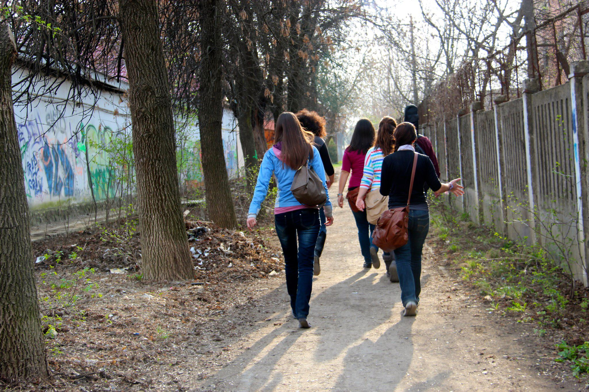
Even I faced bouts of loneliness.
Lonely for a place to call home, lonely for my own bed, lonely for my family.
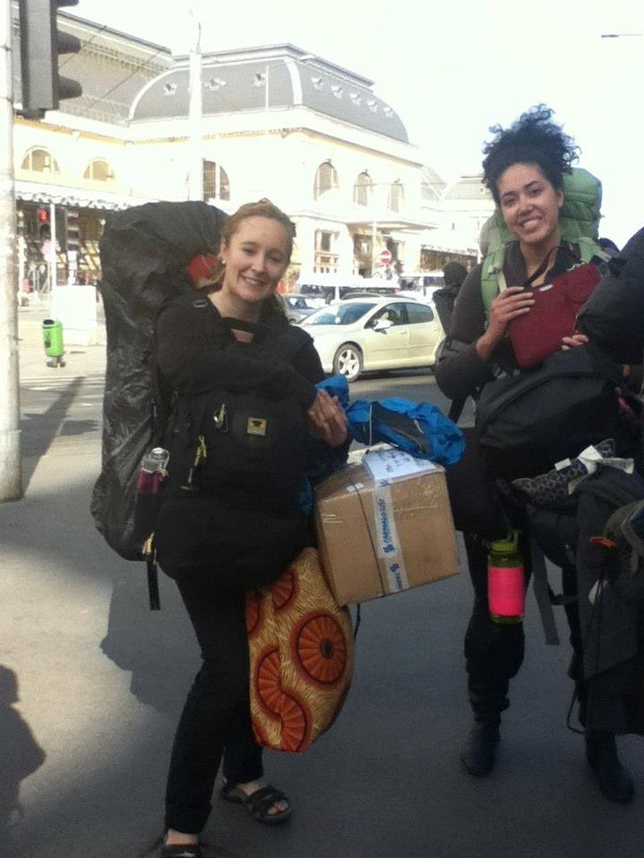
The day before I had found myself missing all of the things I had left behind for an entire year.
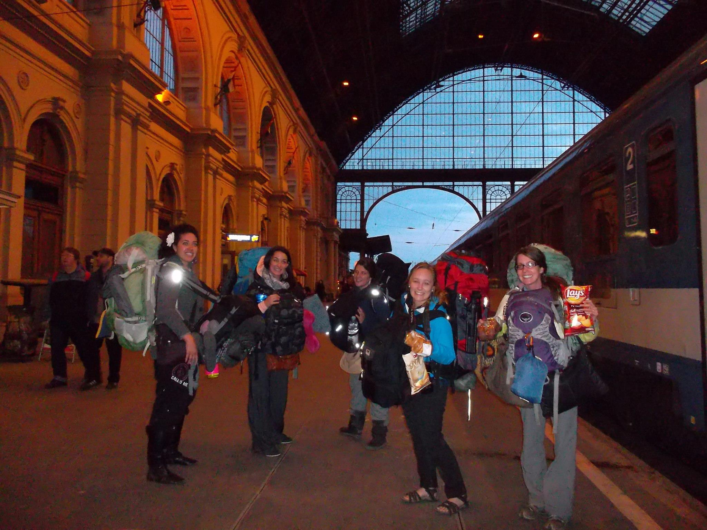
Questioning my purpose in it all:
- Why am I here?
- Why am I in the middle of this small Ukrainian town, a place most people will never hear of?
- Why am I ministering to these homeless villagers?
- What good am I really doing?
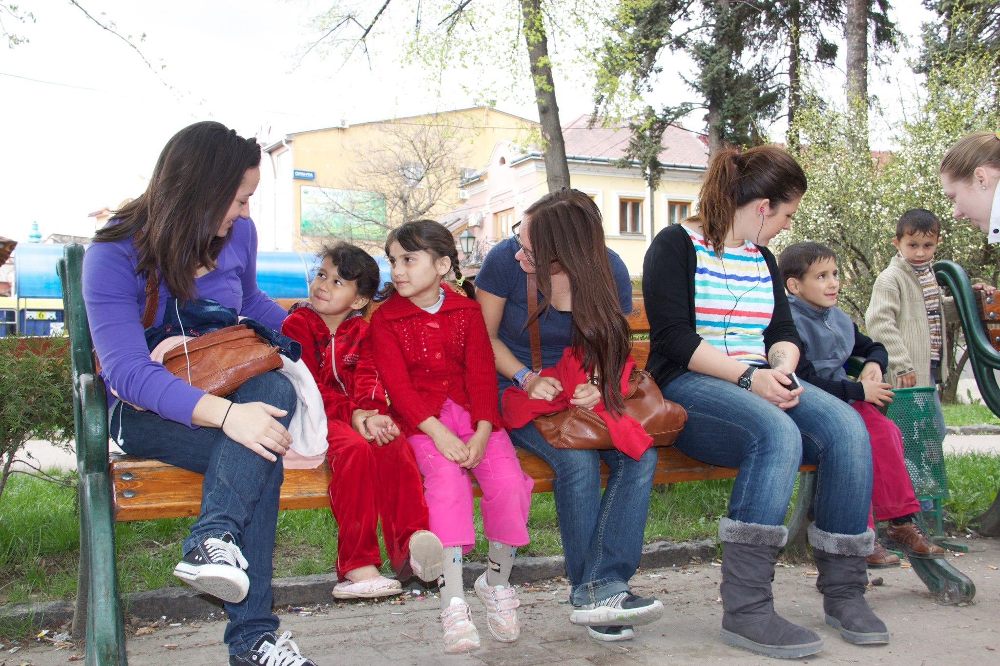
It was in the midst of these questions that I would meet the lonely woman on the street.
Looking into her eyes I saw myself.
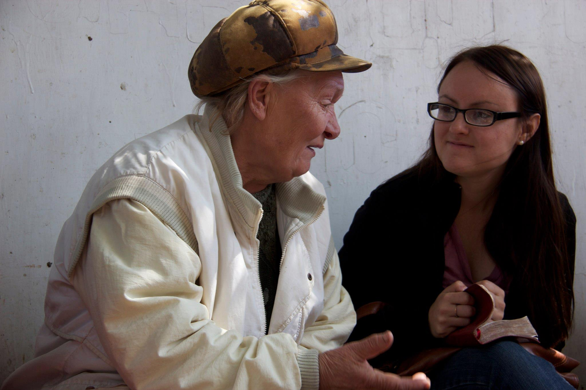
The only difference between her and I was that I had the lucky advantage of being born into a loving family. Born into a country that allowed me the opportunity to succeed.
For these Ukrainian Roma's attending the Thursday feeding program, they were on the unlucky side of life.
They didn’t have the strength to make a difficult U-turn. No bootstrap pulling ability here.
Many were drunk.
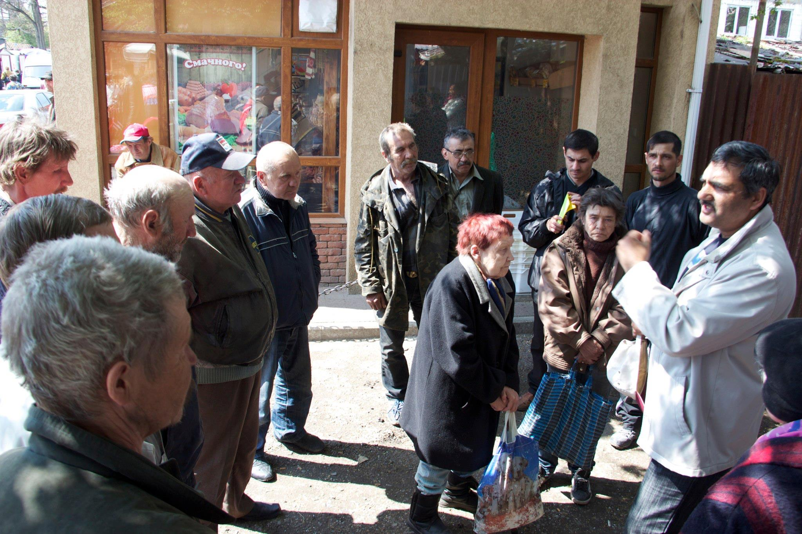
As I write that last sentence I can picture people quickly writing them off.
Years ago that person would have been me.
“It is all THEIR fault. They’re living on the street. They spend everything on booze.”
But as I sit on the dusty curb, smelling the dark stench of homelessness, my mind begins to slowly shift.
Are we all only a few steps from this type of life?
What if I didn’t have a place to call home, even if it was oceans away?
What if I didn't have a faith that kept me strong?
Could this lonely Ukranian woman with the quirky smile be me?
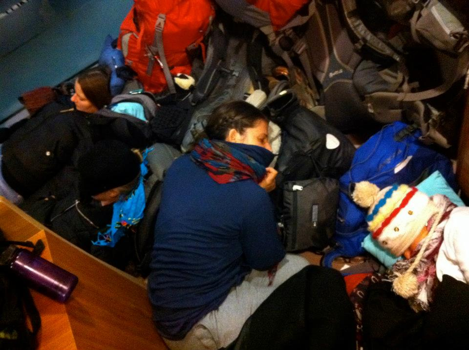
Understanding that most of us like to think better of ourselves, I at least, have to confront the hard truth that we don’t know their stories, we don’t know the difficulties, the letdowns, that they have faced.
For me, life never headed down that fork in the road.
But here I find myself talking to the lonely woman.
She is drunk. It is noon.
“You know she is wasted? She is always wasted, there is no use talking with her.” Valiya, our translator tells me.
Pushing onward to the next needy soul, I paused for just a breath, noticing that this woman desperately wanted to talk.
She wanted to hold my hand, to search my eyes.
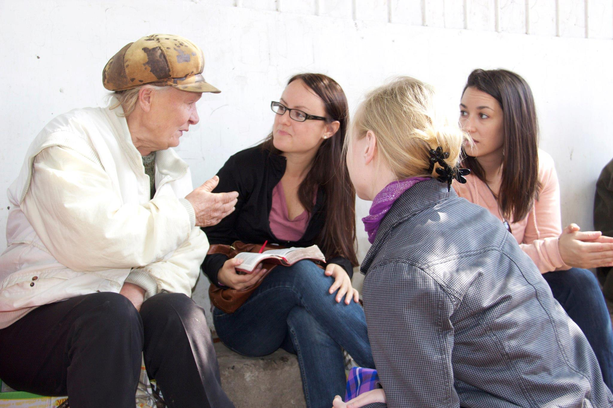
Looking in her sad eyes I could tell she was in this place because everyone had given up on her.
Would she even believe me if I told her that God would never give up on her? Especially when so many others before her had?
And if I said that, is that something I actually believed?
My month spent in Ukraine I would find myself placed immediately next to numerous homeless drunks, smelling their hard life on their skin.
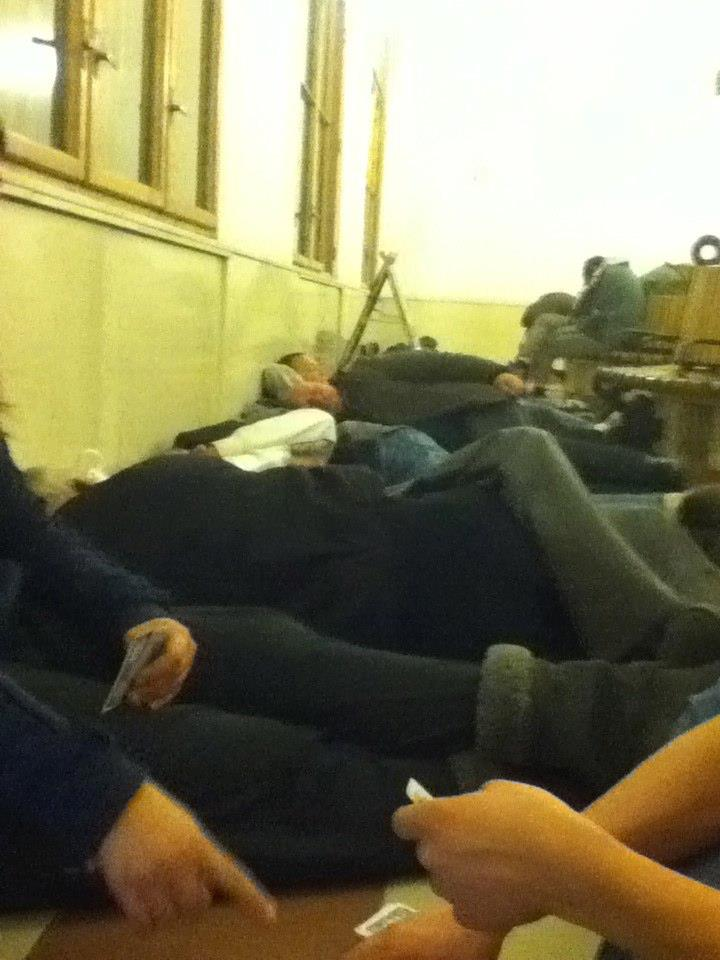
Each time I hear Jesus whispering to me,
“these are my children, don’t give up on them because the world tells you to, don’t give up on them, because I never will.”
Each one of these people has a story; a story that goes far beyond the bottle.
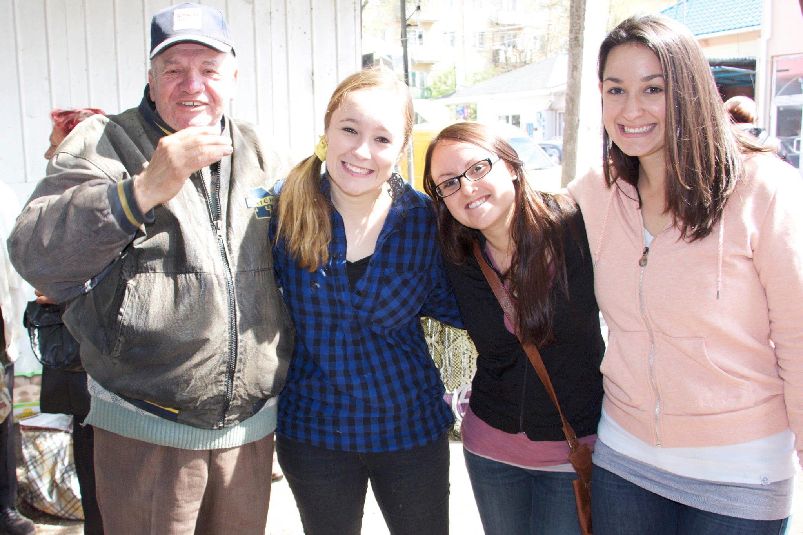
Each one of them took numerous wrong turns, turns that placed them filling a jar full of donated food.
Each one of them is a child of God and is desperately loved by Him.
So for now, in this moment, I will put my judgment aside and not give up on the lonely woman.
Not giving up on her may be the answer to my question of what I am doing in this small Ukrainian town.
Maybe something as simple as holding her dirt encrusted hand, looking into her lonely eyes, and simply not giving up is enough, maybe that is my purpose.
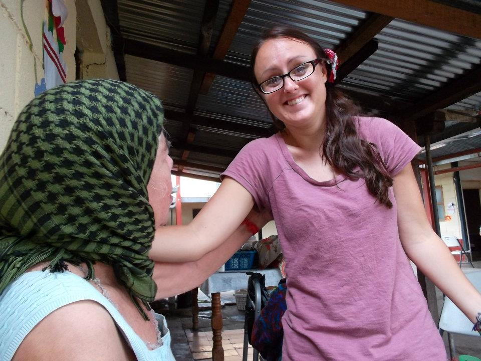